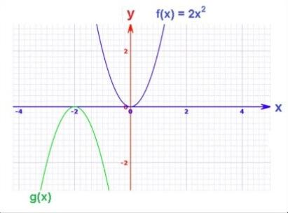

Qendra e Zgjidhjeve
FJALË TË HUMBURA!!! MUND T’I GJESH?
- Vertikalisht
- 2-varg në poezinë klasike greke e latine e formuar nga dy rrokje ku e dyta është më e gjatë se e para.
- 3-sistem juridik i Romës së lashtë.
- 4-formë strukturore e formuar nga ngritja e bllokut ndërmjet dy shkarjeve tektonike.
- 6-degë e mekanikës që studion si lëvizin trupat.
- 7-larmia e specieve në një ekosistem.
- 10-Kurbë matematike e rrafshët, simetrike sipas një boshti që kalon nga kulmi i saj.
- Horizontalisht
- 1-ruajtja e parametrave të pandryshuar të lëngut indor.
- 5-elemente kimike që tregojnë tendencë të madhe për të formuar jone negative, themi se kanë ……. të lartë.
- 8-procesi i krijimit të ideve ose teknologjive të reja që përmirësojnë/ndryshojnë mënyrën se si bëjmë gjëra.
- 9-Shkretëtira më e madhe në botë.

Pyetje Rrufe
Gjatë dialogut të tyre të famshëm,ku thotë Hamleti se duhet të shkojë Ofelia?
- A) Në Kështjellë
- B) Në furrë buke
- C) Në manastir
- D) Në Rusi
Pse Akili pajtohet me Akejtë dhe pranon të luftojë përsëri Trojanët?
- A) Sepse e detyron nëna e tij
- B) Sepse i thotë Apollo
- C)Sepse Agamemnoni i kthen Briseilën
- D)Sepse Hektori vret Patroklin